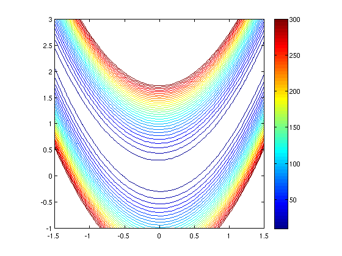
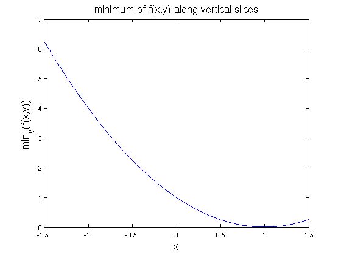
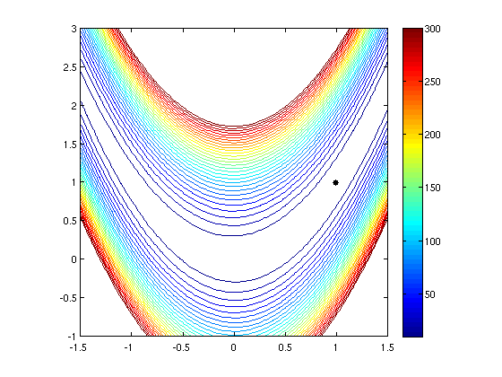
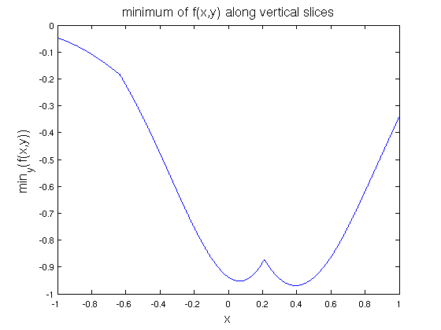
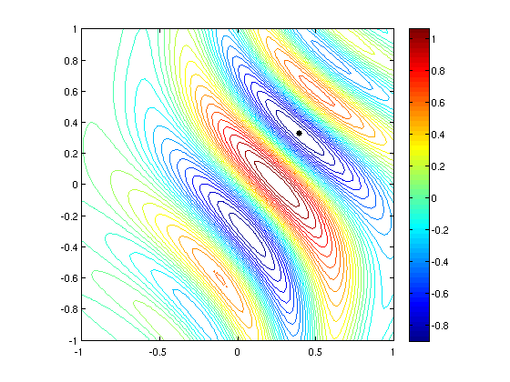

The Rosenbrock function in 2D optimisation
Nick Trefethen, October 2010
Contents
(Chebfun example opt/Rosenbrock.m)
1. The Rosenbrock function
Chebfun can often do quite a good job of minimizing or maximizing a function defined on a 2D rectangle. A famous challenging example is the "Rosenbrock function":
f = @(x,y) (1-x).^2 + 100*(y-x.^2).^2;
First let's plot it to get an idea:
x = linspace(-1.5,1.5); y = linspace(-1,3); [xx,yy] = meshgrid(x,y); ff = f(xx,yy); levels = 10:10:300; LW = 'linewidth'; FS = 'fontsize'; MS = 'markersize'; figure, contour(x,y,ff,levels,LW,1.2), colorbar axis([-1.5 1.5 -1 3]), axis square, hold on
It's obvious from the formula that the minimum value is 0, taken at x=y=1. In Chebfun, we can find this by taking slices. If x0 is a constant, then the minimum of f(x0,y) over all y can be obtained like this:
fminx0 = @(x0) min(chebfun(@(y) f(x0,y),[-1 3]));
Now we can make a chebfun representing fminx as a function of x:
fminx = chebfun(fminx0,[-1.5 1.5],'vectorize','splitting','on'); figure, plot(fminx,LW,1.6) xlabel('x',FS,16) ylabel('min_y(f(x,y))',FS,16) title('minimum of f(x,y) along vertical slices',FS,16)
The global minimum of f(x,y) is the minimum of fminx:
format long
[minf,minx] = min(fminx)
minf =
-4.416844862125998e-15
minx =
0.999999999999614
The variable minx represents the x coordinate of the minimum. We can find the y coordinate like this:
[minf,miny] = min(chebfun(@(y) f(minx,y), [-1 3]))
minf =
-2.842170948999650e-14
miny =
0.999999999999228
Let's show the contour plot again, with the minimum point:
close, plot(minx,miny,'.k',MS,20)
 2. A function with several local minima
Why did we put 'splitting on' in this computation? It wasn't necessary in this case, but it is important in more general cases where f(x,y) has several local extrema, because then the function fminx may not be smooth.
For example, consider this function defined on the square [-1,1]x[-1,1]:
f = @(x,y) exp(x-2*x.^2-y.^2).*sin(6*(x+y+x.*y.^2)); x = linspace(-1,1); y = linspace(-1,1); [xx,yy] = meshgrid(x,y); ff = f(xx,yy); figure, contour(x,y,ff,30,LW,1.2), colorbar axis([-1 1 -1 1]), axis square, hold on

We define fminx0 and fminx as before. Because of the lack of smoothness, this takes a little while:
tic fminx0 = @(x0) min(chebfun(@(y) f(x0,y),[-1 1])); fminx = chebfun(fminx0,[-1 1],'vectorize','splitting','on'); figure, plot(fminx,LW,1.6) xlabel('x',FS,16) ylabel('min_y(f(x,y))',FS,16) title('minimum of f(x,y) along vertical slices',FS,16) toc
Elapsed time is 16.390056 seconds.
Here are the breakpoints that Chebfun has detected:
fminx.ends
ans = Columns 1 through 3 -1.000000000000000 -0.635872022371398 0.210237104254783 Column 4 1.000000000000000
We can now quickly compute the global minimum as before:
[minf,minx] = min(fminx) [minf,miny] = min(chebfun(@(y) f(minx,y), [-1 3]))
minf = -0.969232500643147 minx = 0.395759627601425 minf = -0.969232500643148 miny = 0.331573987886851
And here's the plot:
close, plot(minx,miny,'.k',MS,20)
 Reference:
[1] H. H. Rosenbrock, "An automatic method for finding the greatest or least value of a function", Computer Journal 3 (1960), 175-184.
[2] S. Scheuring, Global Optimization in the Chebfun System, thesis, MSc in Mathematical Modelling and Scientific Computing, Oxford University, 2008.